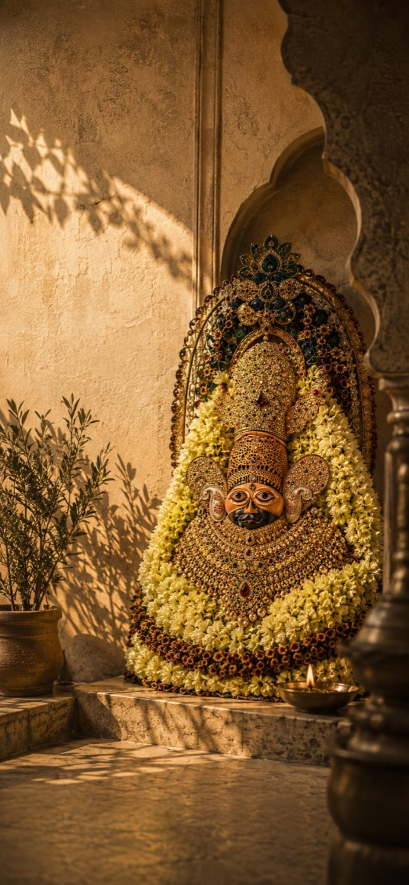
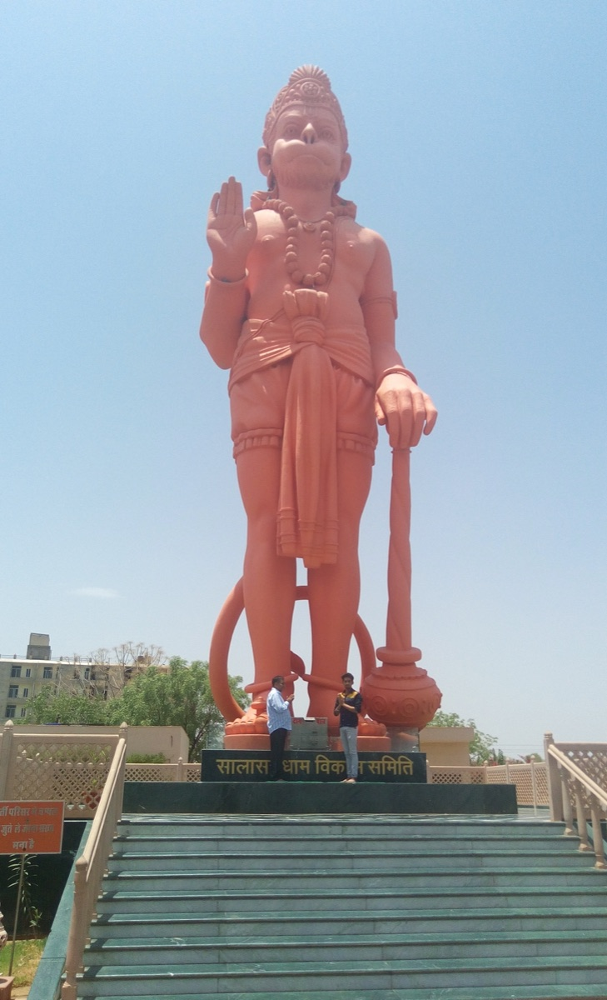

Managing Belief
Shyamarpan.
Across sacred cities and timeless traditions, Shyamarpan is an invitation to surrender, to connect and to experience the divine in its most intimate form.
Across sacred cities and timeless traditions, Shyamarpan is an invitation to surrender, to connect and to experience the divine in its most intimate form.

Reverence. Refinement. Rhythm.
Some journeys are planned. This one is answered. A journey where the soul slows down and Divinity draws closer — where desert light, soulful music and quiet indulgence become part of the offering. An exquisite retreat, curated for darshan, devotion and the art of surrender.
Curated stays · All-inclusive experience. Tailored arrangements available for larger groups, with stay customisation on request.
Enquire About ShyamarpanSome journeys are measured in miles. Some in moments of grace. Shyamarpan is a journey the heart remembers.
